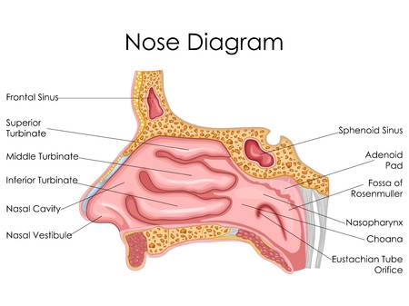

Nose
The nose possesses a couple of exterior nostrils, which are divided by a framework of cartilaginous structure termed as the septum. This is the structure that evenly separates the right nostril from the left nostril. Tiny hair follicles that cover the interior lining of nostrils acts as the body’s first line of defence against foreign pathogens. Furthermore, they provide additional humidity for inhaled air..